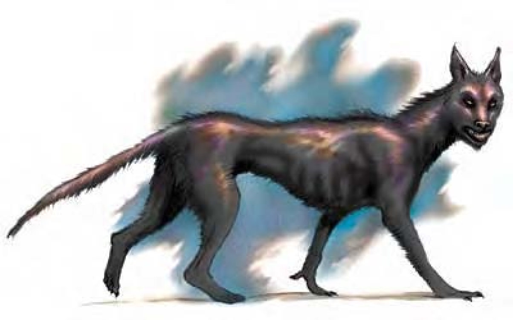

| 资料栏位 | 夜嘶猎犬 (Yeth Hound) 中型异界生物 (外界、邪恶) |
|---|---|
| 生命骰 | 3d8+6 (19HP) |
| 先攻 | +6 |
| 速度 | 40英尺 (8格)、飞行60英尺 (良好) |
| 防御等级 | 20 (+2敏捷、+8天生)、接触12、措手不及18 |
| 基本攻击/擒抱 | +3 / +6 |
| 攻击 | 啮咬+6近战 (1d8+4) |
| 全力攻击 | 啮咬+6近战 (1d8+4) |
| 占据/触及 | 5英尺/5英尺 |
| 特殊攻击 | 吠叫、阻绊 |
| 特殊能力 | 伤害减免10/银、黑暗视觉60英尺、飞行、灵敏嗅觉 |
| 豁免 | 强韧+5、反射+5、意志+5 |
| 属性 | 力量17、敏捷15、体质15、智力6、感知14、魅力10 |
| 技能 | 聆听+11、侦察+11、搜索+7、生存+11 (追踪+13) * |
| 专长 | 精通先攻、追踪 |
| 环境 | 黑帝斯灰色荒漠 |
| 组织 | 单独、成双或一批 (6-11) |
| 挑战级数 | 3 |
夜嘶猎犬看来像是巨大的灰猎犬，毛色暗黑，双眼散发淡红色光芒。
夜嘶猎犬会在夜空中低飞滑翔，找寻合适的猎物。夜嘶猎犬肩高5英尺，重约400磅。夜嘶猎犬不会说话，但听得懂炼狱语。
战斗夜嘶猎犬只在夜晚狩猎，因为他们非常畏惧阳光，即使有性命之忧，也不会在白天出没。在计算伤害减免时，夜嘶猎犬的天生武器或其他持用武器都视为邪恶阵营。
吠叫（超自然）：当夜嘶猎犬低吼或咆哮时，除了邪恶异界生物之外，身边300英尺扩散范围内的所有生物都必须通过意志检定（DC=11），否则就会陷入慌乱，持续时间2d4轮。此能力属于影响心灵的恐惧音波效果。无论是否通过检定，受害者在24小时内不会再受到同一只夜嘶猎犬的吠叫影响。豁免检定DC的调整值与魅力调整值相同。
阻绊（特异）：夜嘶猎犬一旦用啮咬攻击命中目标，就可试着直接以即时动作阻绊对方（+3检定调整值），无须进行接触攻击，也不会引发借机攻击。即使失败了，对手也不能反过来阻绊夜嘶猎犬。
飞行（超自然）：夜嘶猎犬只要花费一个即时动作就可以停止飞行或起飞。
技能：*夜嘶猎犬利用嗅觉进行追踪时，“生存”检定具有+4种族加值。